| Wage | EduYrs |
|---|---|
| 12 | 8 |
| 13 | 10 |
| 14 | 10 |
| 14 | 11 |
| 15 | 12 |
ECON 0150 | Economic Data Analysis
The economist’s data analysis skillset.
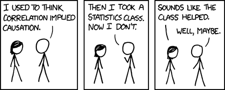
Dr. Taylor Weidman
taylorjweidman@pitt.edu | 4702 Posvar Hall
ECON 0150 | Economic Data Analysis
How economists do data analysis.
Dr. Taylor Weidman
taylorjweidman@pitt.edu | 4702 Posvar Hall
ECON 0150 | Economic Data Analysis
How economists do data analysis.
Taylor
taylorjweidman@pitt.edu | 4702 Posvar Hall
ECON 0150 | Economic Dada Analysis
How economists do data analysis.
Taylor
taylorjweidman@pitt.edu | 4702 Posvar Hall
ECON 0150 | Economic Dada Analysis
How economists do data analysis.

What is economic dada analysis?
The data analysis done by economist fathers :)
What is economic data analysis?
The data analysis done by economists :)
Economists use data to build models and inform decisions.
Describing the landscape of economics
- Have incomes risen in the last year?
- How has unemployment changed?
- Has the racial wealth gap narrowed?
Distinguishing between economic theories
- Do voters with neighbors of the same party vote more?
- Does the gender of a Lyft driver impact rates of tipping?
- Is cooperation higher in ‘easier’ repeated prisoner’s dilemmas?
Course Goals
Developing the data analysis pipeline used by economists.
Skillset 1. Summarize data (tables and figures).
Skillset 2: Build and interpret models (general linear model).
Skillset 3: Communicate findings (writting and presentations).
Goal: I want you to be able to build appropriate statistical models for new problems and interpret their results.
Course Structure
The course is divided into six parts.
Part 1: Exploring Variables
Part 2: Exploring Relationships
Part 3: Univariate General Linear Model
Part 4: Bivariate General Linear Model
Part 5: Multivariate General Linear Model
Part 6: Communicating with Data
Part 1: Exploring Variables
Focus: Understanding single variables through summarization (eg. tables and figures).
Example: Analyzing a dataset of wages.
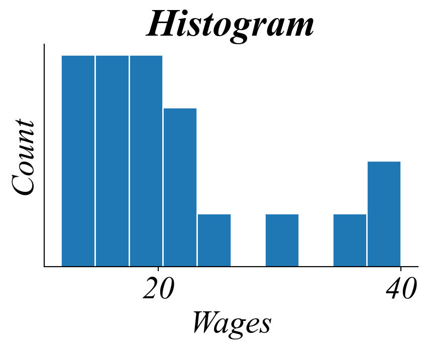
Part 2: Exploring Relationships EDA
Focus: Understanding relationships between variables (eg. scatterplot).
Example: Exploring a relationship - education and wages.
| Wage | EduYrs | |
|---|---|---|
| 0 | 14 | 10 |
| 1 | 15 | 12 |
| 2 | 16 | 12 |
| 3 | 18 | 13 |
| 4 | 18 | 14 |
| 5 | 20 | 14 |
| 6 | 22 | 15 |
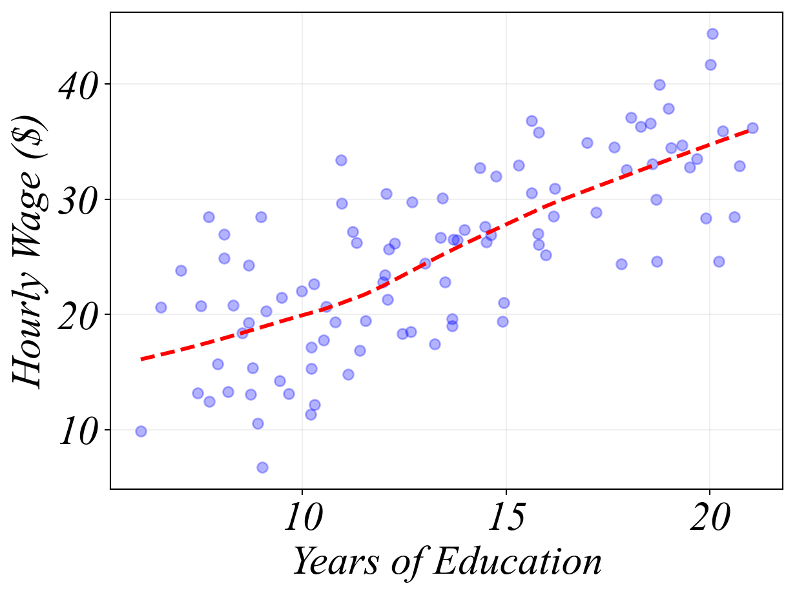
Part 3: Univariate General Linear Model
Focus: Sampling variation, Central Limit Theorem, and basic testing.
Example: Is the difference from $25 a real pattern or just noise?
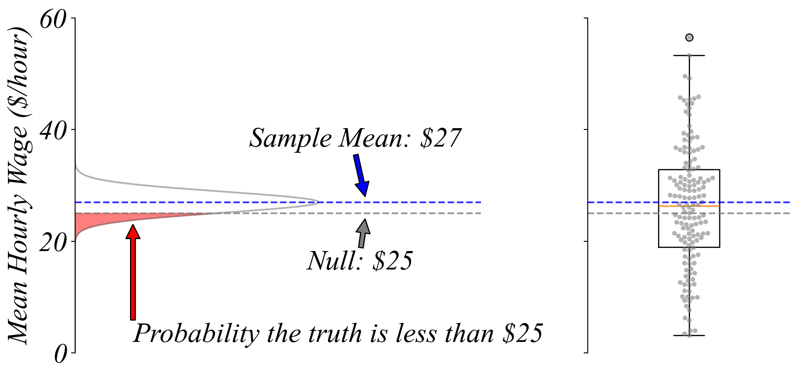
Part 4: Bivariate General Linear Model
Focus: Regression and residual analysis.
Example: Is the positive slope a real pattern or just noise?
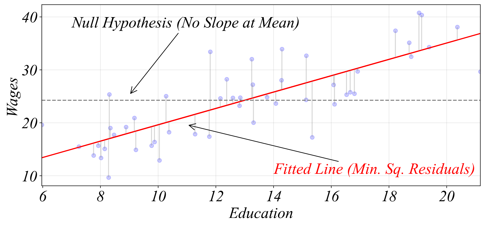
Part 5: Multivariate General Linear Model
Focus: Fixed effects, control variables, interactions.
Example: Do different groups have different relationships?
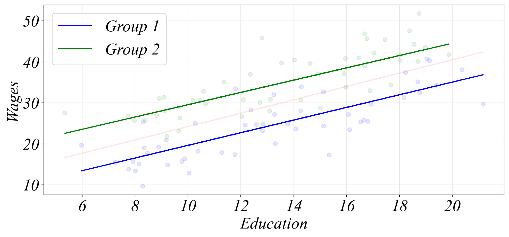
Part 6: Communicating with Data
Focus: Clear narratives, effective visualization, presentation skills.
Examples: Some student work from last semester!
Course Logistics
Resources & Tools
Software: Excel & Python
Website: ECON_0150
Optional Textbooks:
- Data Visualization and Analysis in R by Dustin Fife
- How Charts Lie by Alberto Cairo
- Analysis of Economic Data (2nd ed.) by Gary Koop
Your Work
Exercises (10%)
- Together in class; lowest 3 dropped.
Homework (10%)
- Fridays by 5PM; lowest 3 dropped.
- No-questions-asked extensions through Sunday at Midnight.
MiniExams (1 × 20% + 1 × 15% + 1 × 10% + 1 × 5% + 1 × 0% = 50%)
- Roughly every two weeks; beginning of class
- Open-book, open-note (no electronics).
Your Work
Final Project (30%)
- One small project per part.
- Presentation + paper at the end of the semester.
- Demonstrate full analysis from start to finish.
Attenance (1% extra)
- Just a small gift
Policies
Email Policy:
- Response may take up to 1-2 days.
- Be concise with your questions.
- My email is off evenings and weekends.
AI Policy:
- Encouraged as a learning and coding tool :)
- Your work must be your own.
- Cite your source.
Academic Conduct: Adhere to the Academic Integrity Code.
Looking Ahead
First Homework:
- Due (next) Friday Jan 23rd at 5PM on Gradescope
First MiniExam:
- First class of Week 4 (Feb 3) during the first 20 minutes.
- Bonus “preview” question on material not yet covered.
Getting Set Up
Excel:
- Free for students through Pitt’s institutional access
Python:
- Google Colab Notebooks (recommended)
Survey Fall 2025
Where are students coming from?
Lets measure hometown using distance
Where are students coming from?
Lets measure hometown using distance
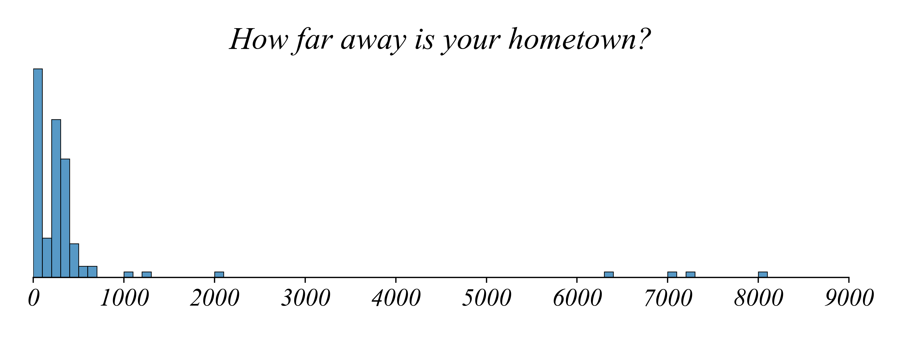> quite a few people come internationally :)
> lets zoom in a bit to see more details about closer distances
Where are students coming from?
Lets measure students hometown using distance
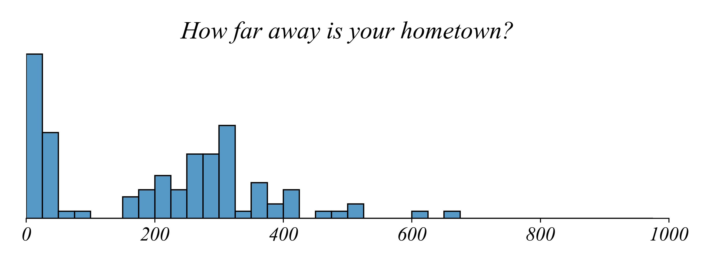> many from Pittsburgh and the Philly area
When were students born?
Lets use birthyear
When were students born?
Lets use birthyear
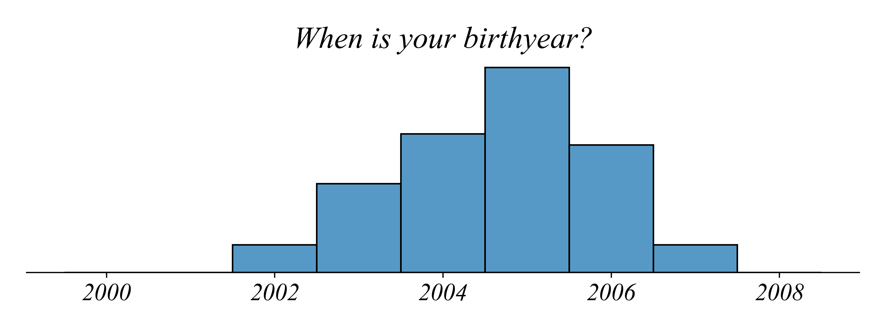> the most common birthyear was 2005
What are students majors?
Sorry if you’re not on the list or have multiple :)
What are students majors?
Sorry if you’re not on the list or have multiple :)
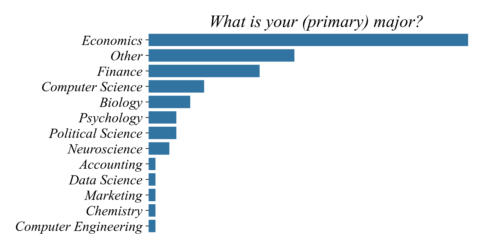> most are Econ and many not on my limited list
Did you like your stats class?
It’s a prereq for the class
Did you like your stats class?
It’s a prereq for the class
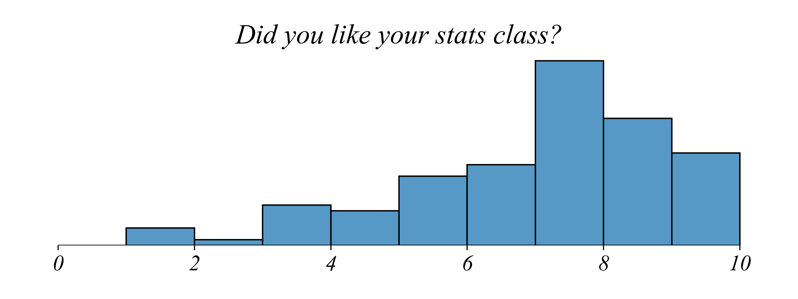> most generally liked it; some did not
Is stats related to your excitement for this class?
I would suspect a positive relationship
Is stats related to your excitement for this class?
I would suspect a positive relationship
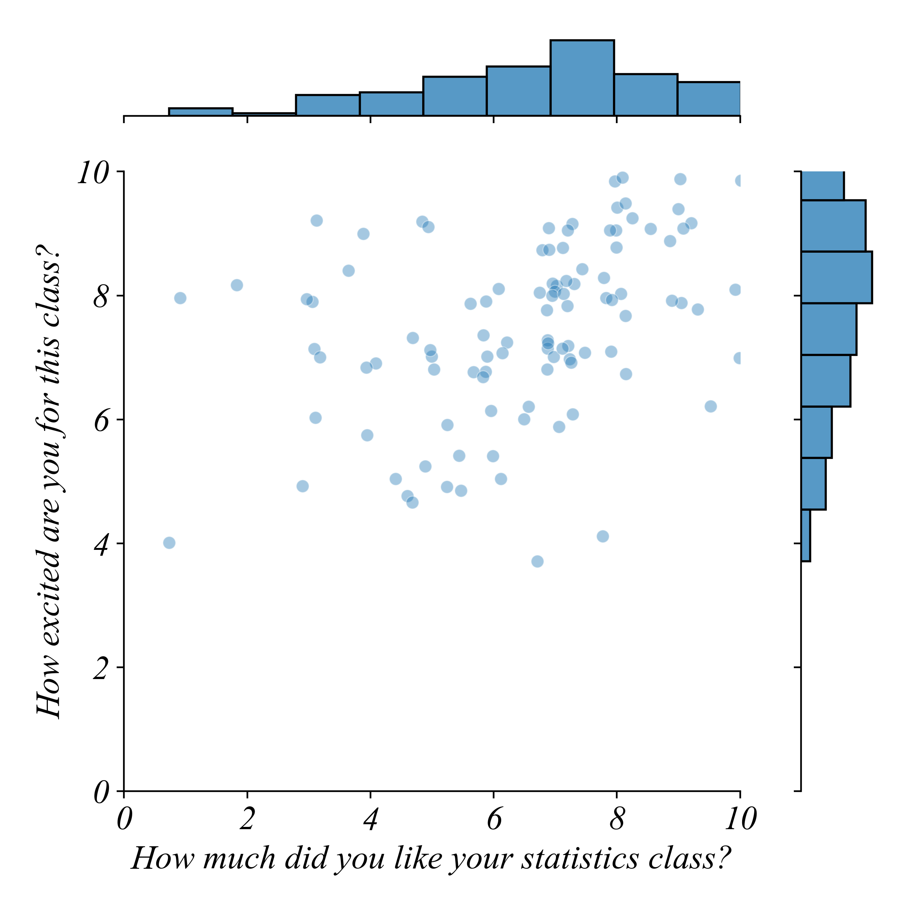Is confidence in Excel related to class excitement?
I would expect it is
Is confidence in Excel related to class excitement?
I would expect it is
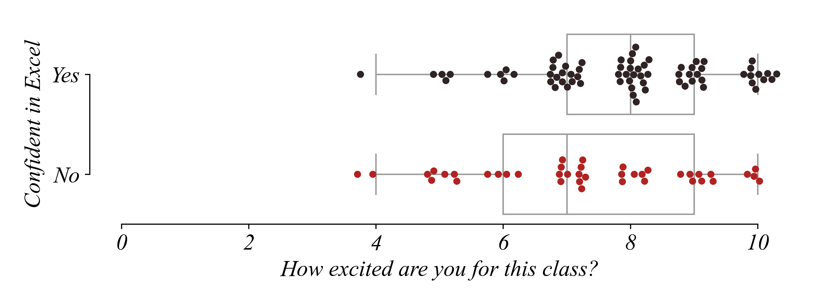Is confidence in python related to excitement?
Again I would expect it is
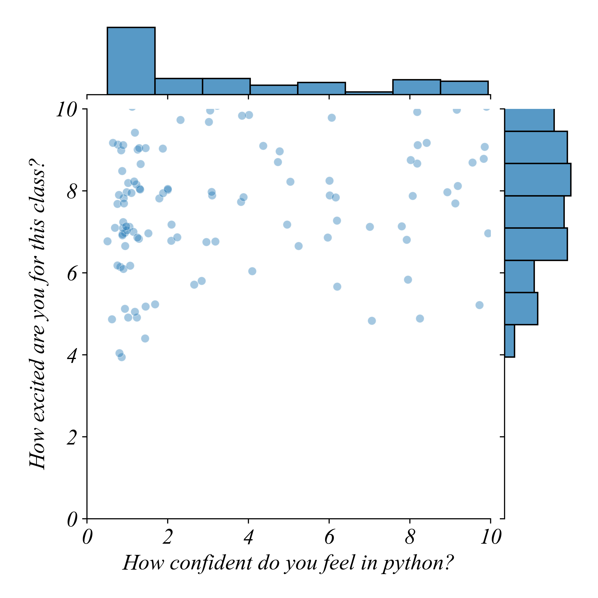ECON 0150 | Economic Data Analysis
Why does economic data analysis matter?
A case study in minimum wage policy
Dr. Taylor Weidman
taylorjweidman@pitt.edu | 4702 Posvar Hall
New Jersey, 1992
A state raises its minimum wage.
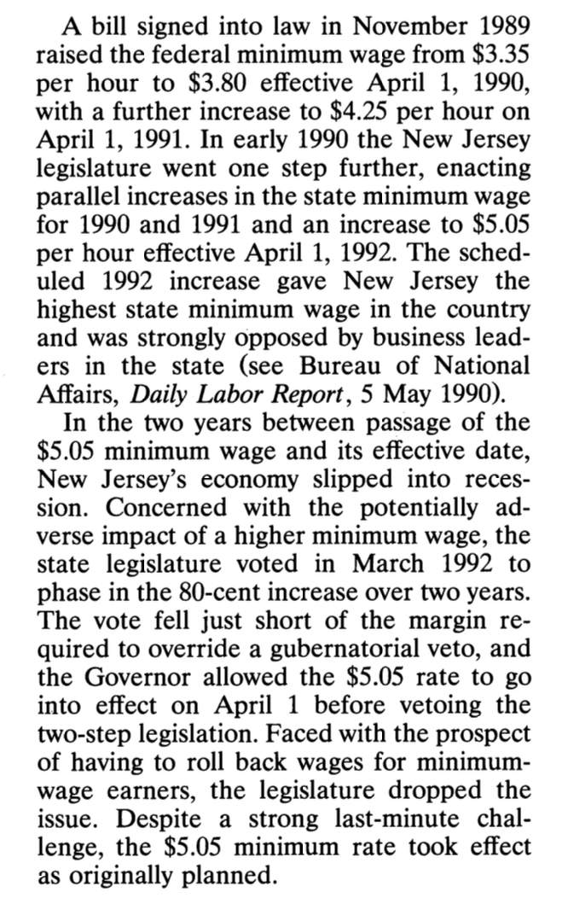
New Jersey, 1992
A natural experiment.
| NJ | PA | |
|---|---|---|
| March 1992 | $4.25 | $4.25 |
| April 1, 1992 | $5.05 | $4.25 |
Economic Theory
Supply and demand.
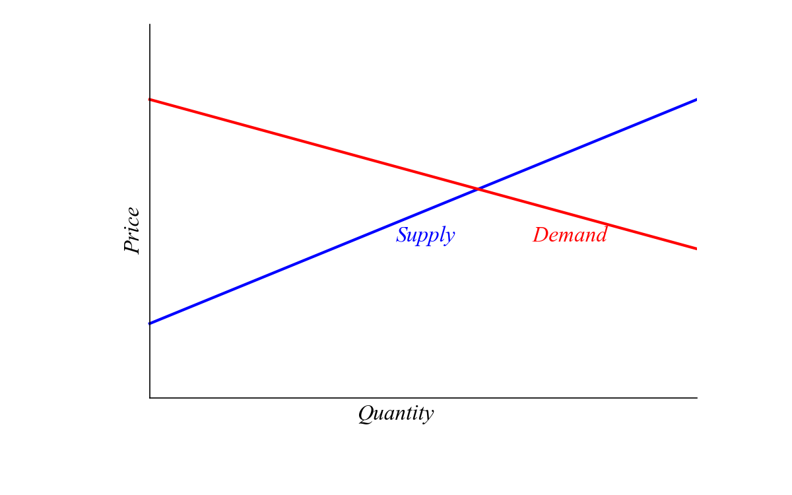Economic Theory
Equilibrium.
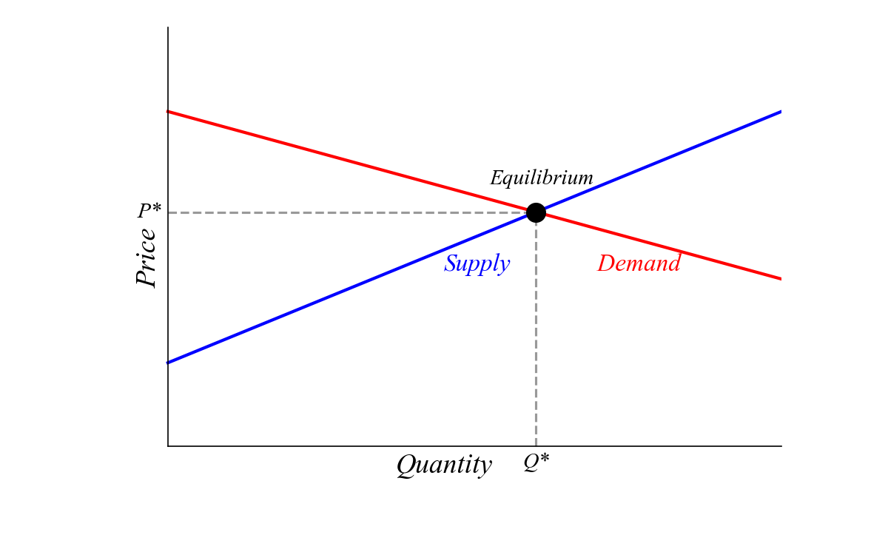Economic Theory
A binding price ceiling creates a shortage.
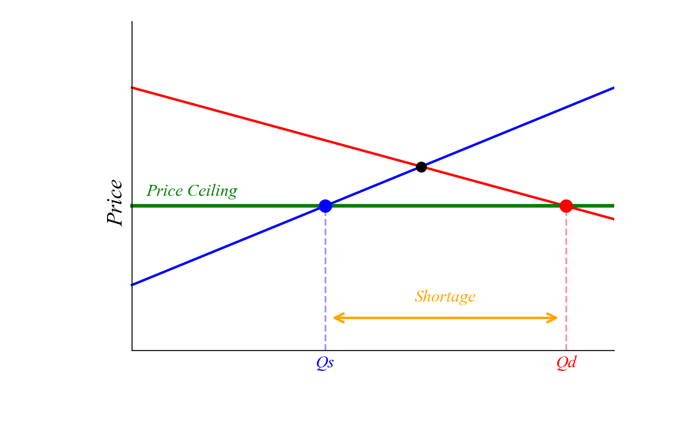Economic Theory
A binding price floor creates a surplus.
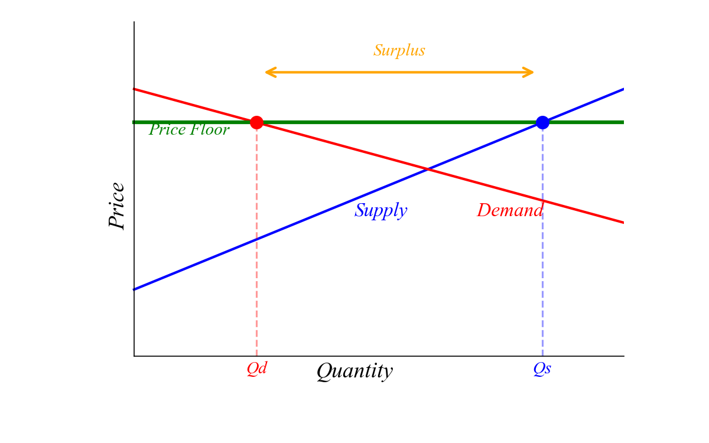Economic Theory
The labor market.
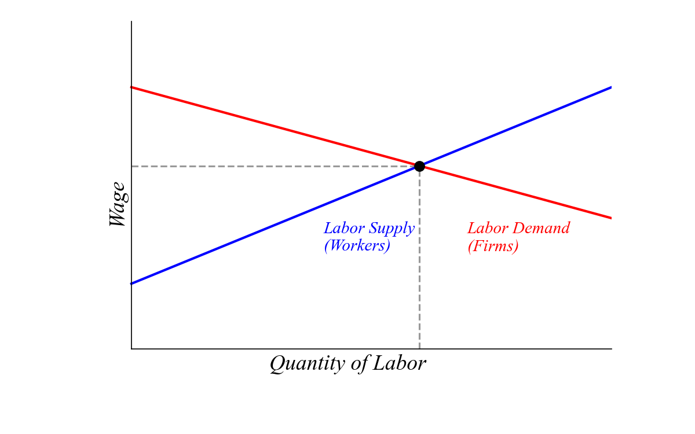Economic Theory
A minimum wage is a price floor in the labor market.
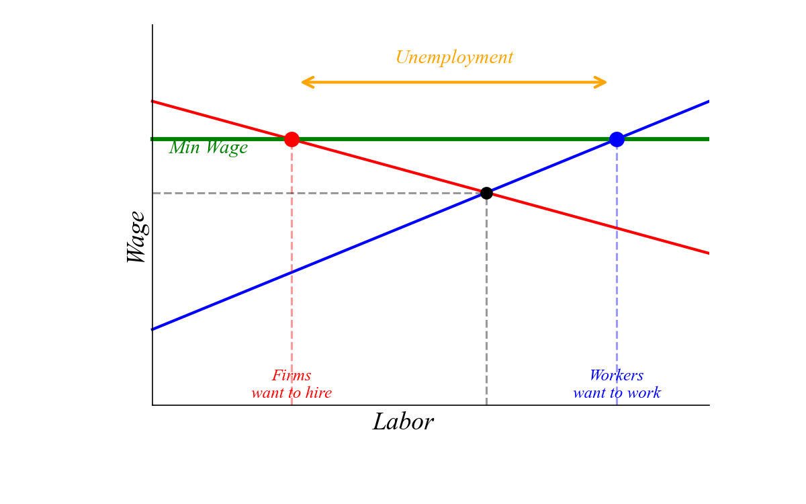Card and Krueger
Two economists decided to find out.
Data
Surveying fast-food restaurants before and after.
| Wave 1 | Wave 2 | |
|---|---|---|
| Timing | Feb-Mar 1992 | Nov-Dec 1992 |
| Policy | Before increase | After increase |
| Stores | 410 | 399 |
Burger King, KFC, Wendy’s, Roy Rogers in NJ and eastern PA
Data
Before the minimum wage increase.
| New Jersey | Pennsylvania | |
|---|---|---|
| Stores surveyed | 331 | 79 |
| FTE employment | 20.4 | 23.3 |
| Starting wage | $4.61 | $4.63 |
| Wage = $4.25 | 30.5% | 32.9% |
Data
Wages shifted to the new minimum.
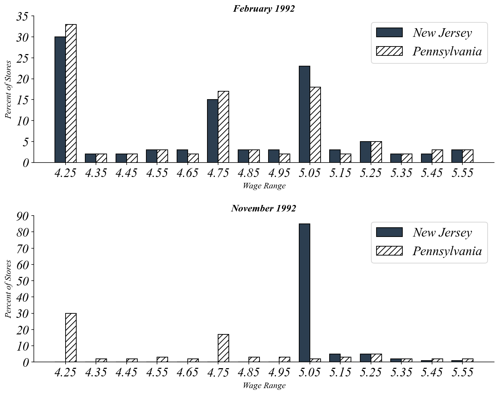Analysis
Difference-in-differences.
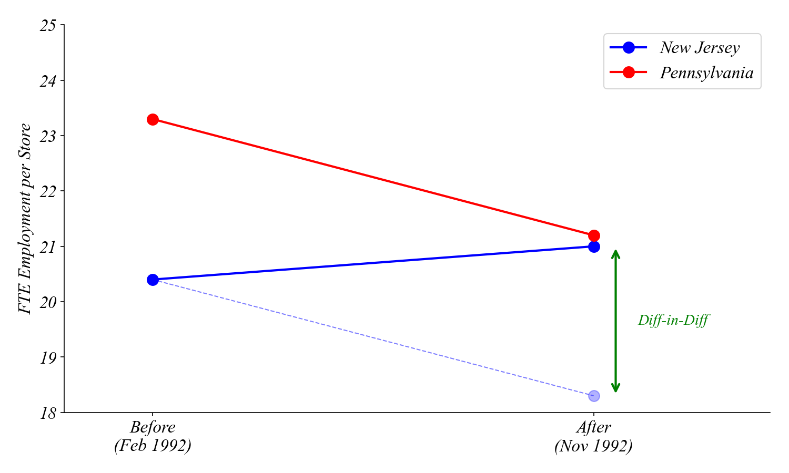Results
Employment did not fall in New Jersey.
| FTE Employment | Pennsylvania | New Jersey | Difference |
|---|---|---|---|
| Before | 23.33 | 20.44 | -2.89 |
| After | 21.17 | 21.03 | -0.14 |
| Change | -2.16 | +0.59 | +2.76 |
Results
Employment did not fall in New Jersey.

Theory vs. Evidence
The data told a different story.
Theory prediction
- higher minimum wage → lower employment
Data showed
- no decrease in employment
“Contrary to the central prediction of the textbook model… we find no evidence that the rise in New Jersey’s minimum wage reduced employment.”
— Card and Krueger (1994)
Let’s learn how to do this kind of analysis.
What is Data?
Data is a sample drawn from a process we want to understand.
\[x \sim F\]
- \(x\) = what we observe (our data)
- \(F\) = what generated it (the random variable)
Two skills:
- Description (Parts 1 - 2) — Summarize \(x\).
- Inference (Parts 3 - 5)— Learn about \(F\) from \(x\).
How Do We Organize Data?
Notation helps keep things organized.
We write \(x_{it}\) where:
- i (unordered) indexes entities (eg. people, firms, countries)
- t (ordered) indexes time (eg. days, months, years)
This distinguishes substantive variables (what we measure) from index variables (how we organize).
Dimensions of Data
Data structure; variable type; number of variables.
Data Structure (\(i\),\(t\))
- Cross-sectional
- Timeseries
- Panel
Variable Type (\(x\))
- Categorical
- Numerical
Number of Variables (\(n\))
- Univariate (n=1)
- Bivariate (n=2)
- Multivariate (n>2)
Data Structures
Which indices (\(i\), \(t\)) are active?
| What varies | Example | |
|---|---|---|
| Cross-section | Entity (i) | Household incomes in 2024 |
| Time series | Time (t) | Average US income from 1950–2024 |
| Panel | Both (i and t) | Income across households, 1950–2024 |
Variable Types
What are the values (\(x\))?
| Definition | Example | ||
|---|---|---|---|
| Categorical | Binary | Two categories | Employed (YES/NO) |
| Nominal | Unordered | Blood type (A, B, AB, O) | |
| Ordinal | Ordered | Education (HS, BA, MA, PhD) | |
| Numerical | Discrete | Countable | Number of children |
| Continuous | Real numbers | Household income |
How We Work with Data
Three steps, every time.
- SELECT — What does our data contain?
- TRANSFORM — How do we change the data to make it more useful?
- ENCODE — How do we turn values into visual elements?
Course Progression
Building complexity along two axes.
| Part | Focus | Key question |
|---|---|---|
| 0 | Framework | What tools do we need? |
| 1 | Variables | What does this variable look like? |
| 2 | Relationships | How do these variables relate? |
| 3 | Univariate GLM | What can we infer about the population? |
| 4 | Bivariate GLM | How does y change with x? |
| 5 | Multivariate GLM | How does y change with x, controlling for z? |
How Each Class Works
A consistent rhythm.
| When | What | Purpose |
|---|---|---|
| Before class | Concept video | Learn core ideas at your pace |
| Start of class | Quiz | Confirm your understanding |
| During class | Exercise | Guided practice with support |
| After class | Homework | Independent practice |
Exercises are homework prep.
Let’s begin.
Exercise 0 | Diagram Data
Q1. Identify the data structure, variable type, indices, and number of variables for dataset1.csv.
| Year | Real_GDP |
|---|---|
| 1970 | 5.316 |
| 1971 | 5.491 |
| 1972 | 5.780 |
| 1973 | 6.106 |
| … | … |
Index: \(t\) (Year)
Structure: Time series
Variable: Continuous
N Variables: Univariate
Exercise 0 | Diagram Data
Q1. Visualize dataset1.csv.
Exercise 0 | Diagram Data
Q2. Identify the data structure, variable type, indices, and number of variables for dataset2.csv.
| Household ID | Employment Status |
|---|---|
| D001 | Unemployed |
| D002 | Employed |
| D003 | Employed |
| D004 | Employed |
| … | … |
Index: \(i\) (Household)
Structure: Cross-sectional
Variable: Binary
N Variables: Univariate
Exercise 0 | Diagram Data
Q2. Visualize dataset2.csv.
Exercise 0 | Diagram Data
Q3. Identify the data structure, variable type, indices, and number of variables for dataset3.csv.
| Household ID | Year | Income | Savings |
|---|---|---|---|
| H001 | 2010 | 34,610 | 6,157 |
| H001 | 2011 | 45,560 | 2,506 |
| H001 | 2012 | 83,698 | 8,789 |
| H002 | 2010 | 52,341 | 4,123 |
| … | … | … | … |
Index: \(i\) (Household), \(t\) (Year)
Structure: Panel
Variable: Continuous
N Variables: Bivariate
Exercise 0 | Diagram Data
Q3. Visualize dataset3.csv.
Exercise 0 | Diagram Data
Q4. Identify the data structure, variable type, indices, and number of variables for dataset4.csv.
| ID | Economic Optimism |
|---|---|
| B001 | Somewhat Pessimistic |
| B002 | Very Pessimistic |
| B003 | Somewhat Optimistic |
| B004 | Very Optimistic |
| … | … |
Index: \(i\) (Person)
Structure: Cross-sectional
Variable: Ordinal
N Variables: Univariate
Exercise 0 | Diagram Data
Q4. Visualize dataset4.csv.
Exercise 0 | Diagram Data
Q5. Identify the data structure, variable type, indices, and number of variables for dataset5.csv.
| ID | Sector |
|---|---|
| A001 | Services |
| A002 | Agriculture |
| A003 | Unemployed |
| A004 | Manufacturing |
| … | … |
Index: \(i\) (Person)
Structure: Cross-sectional
Variable: Nominal
N Variables: Univariate
Exercise 0 | Diagram Data
Q5. Visualize dataset5.csv.